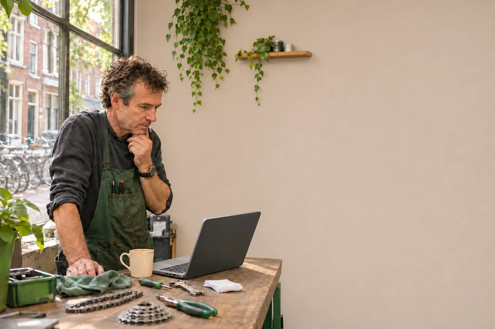

Tijd terug, zwart op wit.
We zoeken uit waar jij en je team tijd verliezen, zetten dat op een rij in een Tijdwinstrapport en bouwen er een passende automatisering voor.
In vier stappen van tijdlek naar tijdwinst
Het Tijdwinstrapport is het resultaat van de eerste twee stappen. De volgende stappen pakken we samen per onderdeel op.
Ontdekken
Een bedrijfsbezoek en gesprekken met de mensen die het werk doen. We kijken mee waar het werk gebeurt.
In kaart brengen
Elk tijdlek op een rij, met de oorzaak, het aantal uren en wat het per jaar kost.
Automatiseren
We bouwen een passende automatisering, te beginnen bij het tijdlek dat het meeste oplevert.
Tijd winnen
Het werk loopt vanzelf. Jij houdt de beslissingen en de tijd voor ondernemen.
Wat in het Tijdwinstrapport staat
- Waar je tijd verliest
- Wat het je kost
- Wat je kunt besparen
Voorbeeldrapport, gevuld met voorbeelddata.
Klantenservice
Mail sorteren, bestelling erbij zoeken, antwoord klaarzetten.
BekijkAdministratie
Offertes, facturen en bonnen die nu worden overgetypt.
Op maatPlanning
Afspraken bevestigen, herinneren en verzetten.
Op maat
Vragen over Tijdwinst
Wat kost een automatisering?
Dat is maatwerk, omdat elk tijdlek anders is. Je ziet eerst in het Tijdwinstrapport wat je bespaart. Daarna krijg je per automatisering een vaste prijs vooraf, tenzij we samen iets anders afspreken.
Staat de prijs in het Tijdwinstrapport?
Nee. In het rapport staat alleen wat jij bespaart, in uren en euro's per jaar. Zo kun je het rapport rustig lezen en delen.
Moet ik software vervangen?
Meestal niet. We bouwen zoveel mogelijk op wat je al gebruikt, zoals je postbus, webshop of boekhouding.
Wat kost het bedrijfsbezoek?
Niets. Het bedrijfsbezoek is gratis, op locatie of als online meeting. We zijn niet aan een regio gebonden.
Wat als er later iets moet worden aangepast?
Onderhoud en aanpassingen spreken we samen af, zodat het past bij hoe jij werkt.